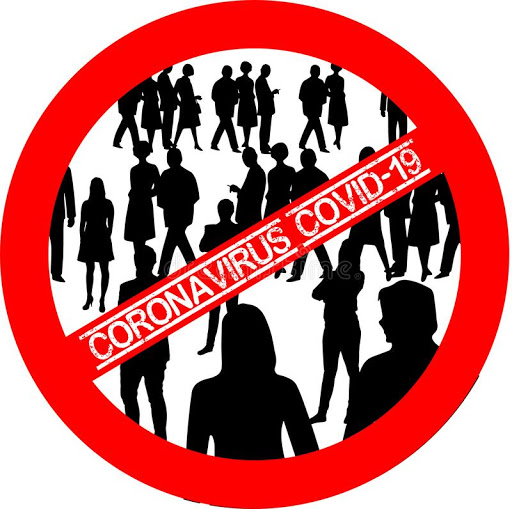

Religious impact

The pandemic has impacted religion in various ways, including the cancellation of the worship services of various faiths, the closure of Sunday Schools, as well as the cancellation of pilgrimages surrounding observances and festivals.Many churches, synagogues, mosques, and temples have offered worship through livestream amidst the pandemic.Relief wings of religious organisations have dispatched medical supplies and other aid to affected areas. Adherents of many religions have gathered together to pray for an end to the pandemic, for those affected by it, as well as for the God they believe in to give physicians and scientists the wisdom to combat the disease;in the United States, Trump designated 15 March 2020 as a National Day of Prayer for "God’s healing hand to be placed on the people of our Nation".
Psychological impact

On 18 March 2020, the World Health Organization issued a report related to mental health and psychosocial issues by addressing instructions and some social considerations during the COVID-19 outbreak.
Due to doubts if pets or other livestock may pass on coronavirus to humans, many people were reluctant to keep their pets fearing transmission, for instance in the Arab World, celebrities were urging people to keep and protect their pets.Meanwhile, people in the U.K. tended to acquire more pets during the coronavirus lockdown.
Suicide
The coronavirus pandemic has been followed by a concern for a potential spike in suicides, exacerbated by social isolation due to quarantine and social-distancing guidelines, fear, and unemployment and financial factors.
Risk perception
Chaos and the negative effects of the COVID-19 pandemic may have made a catastrophic future seem less remote and action to prevent it more necessary. However, it may also have the opposite effect by having minds focus on the more immediate threat of the pandemic rather than the climate crisis or the prevention of other disasters.
Personal gatherings

The impact on personal gatherings has been strong as medical experts have advised, and local authorities often mandated stay-at-home orders to prevents gatherings of any size, not just the larger events that were initially restricted. Such gatherings may be replaced by teleconferencing, or in some cases with unconventional attempts to maintain social distancing with activities such as a balcony sing-along for a concert, or a "birthday parade" for a birthday party. Replacements for gatherings have been seen as significant to mental health during the crisis.
Domestic violence

Many countries have reported an increase in domestic violence and intimate partner violence attributed to lockdowns amid the COVID-19 pandemic. Financial insecurity, stress, and uncertainty have lead to increased aggression at home, with abusers able to control large amounts of their victims' daily life. United Nations Secretary-General António Guterres has called for a domestic violence "ceasefire".
Elderly care
Older people are particularly affected by COVID-19. They need special attention during the COVID-19 crisis, and their voices, opinions and concerns are important in formulating responses.
Global data are extremely uncertain at present, nonetheless, the heightened risks of COVID-19 for older persons are evident in all national data. The scale of testing and nature of reporting vary between governments and hence there is risk of misinformation by generalizing from the experience and reports of a given country.
While the number of older persons is relatively and absolutely smaller in developing countries, particularly in Africa, this coincides with other serious structural risks. Countries with the fewest older persons (such as many of the least developed countries), have the fewest health resources, limited experience caring for older patients (including few geriatric specialists), less institutional care for older persons, and far fewer public or NGO support structures for outreach, screening and community-based care of older persons.
Older persons living in long-term care facilities, such as nursing homes and rehabilitation centers, are particularly vulnerable to infection and adverse outcomes from COVID-19. Older persons who live alone may face barriers to obtaining accurate information, food, medication, and other essential supplies during quarantine conditions and community outreach is required. Older persons, especially in isolation, those with cognitive decline, and those who are highly care-dependent, need a continuum of practical and emotional support through informal networks (families), health workers, caregivers, and volunteers.